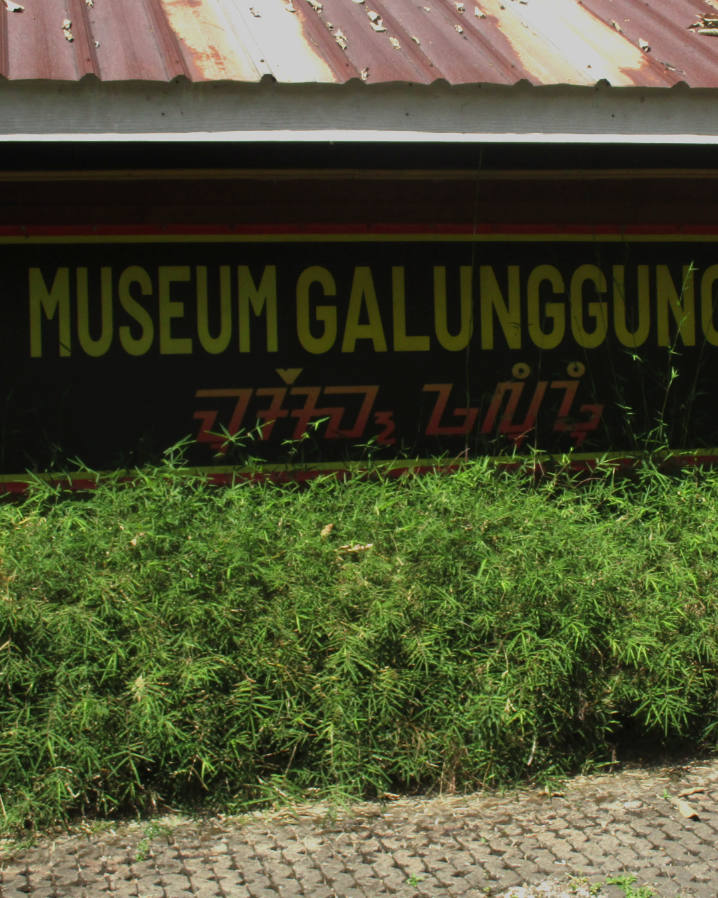
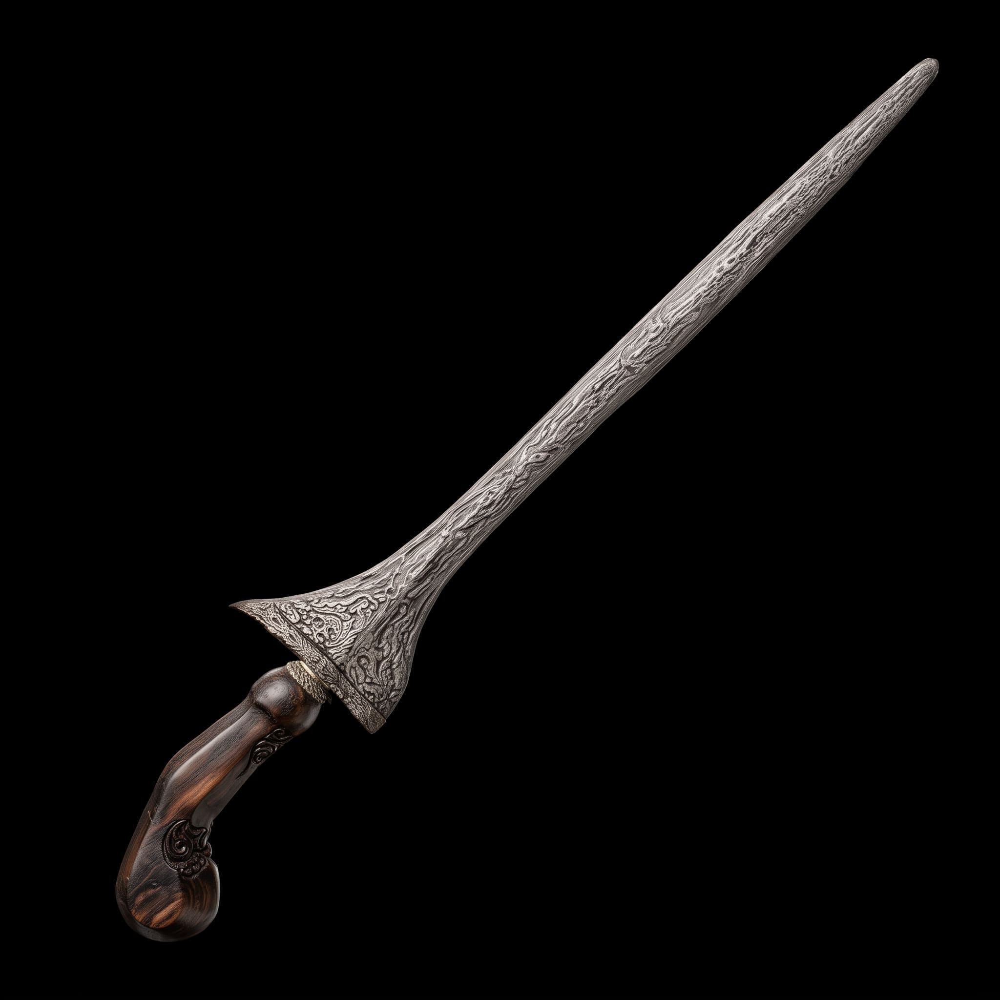

NYAWANG
PUSAKA

Jelajahi jejak kejayaan Kerajaan Galunggung melalui koleksi peninggalan bersejarah yang menyimpan kisah, budaya, dan identitas bangsa.
AUGMENTED REALITY
Scan marker pada setiap koleksi peninggalan Kerajaan Galunggung menggunakan kamera ponsel Anda — lihat objek 3D, dengar narasi, dan baca deskripsi mendalam tanpa perlu install aplikasi.
Objek pusaka muncul sebagai model 3D realistis ketika kamera mendeteksi marker.
Dengarkan penjelasan langsung dari narator tentang filosofi dan sejarah setiap benda.
Materi penelitian, pamor, asal usul, dan periode benda ditampilkan secara detail.
Hanya butuh browser modern — jalankan langsung tanpa instal aplikasi tambahan.

KOLEKSI
Peninggalan berharga lintas zaman — dari era Kerajaan Galunggung, Pemerintahan Sukakerta, transisi menjadi Kabupaten Tasikmalaya, hingga Peninggalan Kerajaan Mataram & Pajajaran yang menjadi saksi bisu perjalanan sejarah.
LINIMASA
Klik setiap periode untuk melihat sejarah lebih lengkap: dari Galunggung, Sukakerta, hingga menjadi Kabupaten Tasikmalaya.
Sebelum abad ke-7
Wilayah Galunggung telah dikenal sebagai pusat permukiman dan kegiatan spiritual masyarakat Sunda sejak zaman prasejarah.
Abad ke-7 – abad ke-13
Galunggung tumbuh sebagai pusat kewibawaan di Tatar Sunda, tempat melegitimasi para raja.
Abad ke-13 – abad ke-20
Setelah masa kerajaan, wilayah Galunggung bergabung ke dalam Pemerintahan Sukakerta sebagai cikal bakal Kabupaten Tasikmalaya.
Abad ke-19 – sekarang
Perkembangan nama dari Sukapura menjadi Kabupaten Tasikmalaya modern yang kita kenal hari ini.
Abad ke-20 – sekarang
Pusaka dan naskah kuno dirawat di Museum Galunggung untuk generasi mendatang.
MUSEUM GALUNGGUNG
Museum Galunggung adalah pusat pelestarian benda bersejarah dari Kerajaan Galunggung, Pemerintahan Sukakerta, hingga periode awal Kabupaten Tasikmalaya. Berdiri di kaki Gunung Galunggung, museum ini bertujuan untuk menjaga warisan budaya leluhur, serta menjadi sarana edukasi dan riset bagi generasi mendatang.
Koleksi
500+
Tahun Berdiri
2020

INFO KUNJUNGAN
*Waktu kunjungan dapat berubah sewaktu-waktu. Disarankan datang 30 menit sebelum jam tutup.
Jl. Raya Sariwangi – Gunung Galunggung No. 12,
Kec. Sariwangi, Kab. Tasikmalaya, Jawa Barat 46468
Mau lihat langsung koleksi 3D-nya?
Buka AR Sekali Lagi